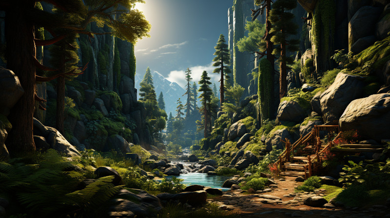

Figure 1: Bellgrald (The Great Forest) in Vulwin Horde Territory
Nestled on the western border of the Kingdom of Tanquende, the Vulwin Horde is a community of Taurashim, also known as Wood Elves. They are renowned for their deep connection with the ancient forests that blanket their territory, particularly Bellgrald Forest, an enigmatic and awe-inspiring realm of towering trees and mysterious creatures.
Bellgrald (The Great Forest): At the heart of the Vulwin Horde’s territory lies the Bellgrald, an expanse of woodland unlike any other in Naurrnen. Its colossal trees reach for the heavens, their massive trunks cloaked in moss and vines. It is said that within the depths of this forest dwell creatures of both wonder and terror, their existence shrouded in myth and legend. Among these woods, ancient and sacred groves are scattered, where the Taurashim conduct their most profound rituals and commune with the spirits of the land.
Song of the Taurashim
(Verse 1) Two are better than one, In the dance of the moon and sun, For the labor they share, Bears the fruits of the world we care.
(Chorus) A strand of three cords is not quickly torn, Bound in spirit, in love we’re sworn. In the sacred grove, under the ancient tree, We find our strength, in unity.
(Verse 2) If one should fall, The other answers the call. And to warm the chill, Two bodies lay quiet and still.
(Chorus) A strand of three cords is not quickly torn, Bound in spirit, in love we’re sworn. In the sacred grove, under the ancient tree, We find our strength, in unity.
(Bridge) But ah, the power of three, Chieftain, druid, and the diplomat free. In heart, in mind, in spirit we strive, It’s the secret way the Taurashim thrive.
(Chorus) A strand of three cords is not quickly torn, Bound in spirit, in love we’re sworn. In the sacred grove, under the ancient tree, We find our strength, in unity.
(Outro) So let us chant, in voices bold, The ancient wisdom, in stories told. A strand of three cords, forever we’ll be, The enduring might of the Vulwin Horde, in unity.
The Three Major Hords: The Vulwin Horde is divided into three major hords, each with its own distinct traditions, leaders, and territories within the Vulwin territory. These hords are named after revered Wood Elf ancestors and are known for their unique skills and roles within the Horde.
Horde Gwennath: This hord is known for its exceptional hunting skills and foraging expertise. Members of Horde Gwennath are often the providers of the Horde, responsible for securing food and resources from the bountiful forest.
Horde Thalrindor: Horde Thalrindor is renowned for its spiritual connection to the Great Forest. Its members include powerful druids and guardians of the sacred groves. They are the keepers of ancient lore and the protectors of the forest’s secrets.
Horde Caelithra: Horde Caelithra specializes in diplomacy and trade. They are the bridge between the Vulwin Horde and the outside world, maintaining essential relationships with nearby settlements and trading partners.
How do these hordes manage their conflicting traditions and values when it comes to shared governance?
They largely share common interests, and consider each external horde essential to the whole. If disputes do arise, they generally default to Aravenna Leafwhisper, as she is the elder of the three middle-aged leaders, the wisest, and if there is anything they need to do or not do that is not aligned with their normal ways of approaching problems, it is usually due to accomodate some foreign diplomat or merchant guild.
Are there any inter-horde competitions or festivals that help to foster unity?
There are seasonal festivals that Horde Thalrindor hold. As many as 12 a year. Each horde will performa a ritual service to the other hordes. Horde Caelithra will bring lots of game for roasting, and hold training and contests for the other hordes. Horde Thalrindor will bring drink and medicine, and perform sophisticated ritual healings for any members of the other hordes. Horde Caelithra will bring books and teach the other hordes how to read, write, and how to speak in Adama (the tongue of man). Each tribe celebrates their unique gifts and strengths by offering them to the others. They are constantly reminded of their interdependence with each other.
How do the hordes collectively defend against external threats, given their different skill sets?
All three hordes take advantage of the unique terrain they live in, and support each other the best they can. “A strand of three cords is not quickly torn” is their mantra.
As the Vulwin Horde navigates the intricate tapestry of the Great Forest and interacts with neighboring kingdoms like Tanquende, their way of life remains both mysterious and captivating. The Taurashim of the Vulwin Horde stand as guardians of the ancient woodland, protectors of its secrets, and stewards of its bountiful resources.